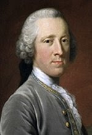

HENRY CAVENDISH

Introduction
Henry Cavendish was a British naturalist, philosopher, scientist, and a theoretical chemist. He is best known for the discovery of hydrogen. He also described the density of water, and determined the density of earth for the first time. He studied the properties of different gases and the composition of atmospheric air. He was distinguished for the great accuracy and precision of his work.
About Henry Cavendish
Henry Cavendish was born on 10 October 1731 in Nice, where his family was living at the time.
At age 11, Henry attended Hackney Academy, a private school near London. At age 18 (on 24 November 1748) he entered the University of Cambridge in St Peter's College, now known as Peterhouse, but left three years later on 23 February 1751 without taking a degree.
Cavendish's Work
Cavendish is considered to be one of the so-called pneumatic chemists of the eighteenth and nineteenth centuries, along with, for example, Joseph Priestley, Joseph Black, and Daniel Rutherford. By combining metals with strong acids, Cavendish made hydrogen (H2)—which he called "inflammable air"—by dissolving metals in acids. Although others, such as Robert Boyle, had prepared hydrogen gas earlier, Cavendish is usually given the credit for recognizing its elemental nature. Also, by dissolving alkalis in acids, Cavendish made "fixed air" (carbon dioxide), which he collected, along with other gases, in bottles inverted over water or mercury. He then measured their solubility in water and their specific gravity and noted their combustibility. Cavendish was awarded the Royal Society’s Copley Medal for this paper.
In 1785 Cavendish carried out an investigation of the composition of common (i.e., atmospheric) air, obtaining impressively accurate results. He conducted experiments in which hydrogen and ordinary air were combined in known ratios, and then exploded with a spark of electricity. Furthermore, he also described an experiment in which he was able to remove, in modern terminology, both the oxygen and nitrogen gases from a sample of atmospheric air until only a small bubble of unreacted gas was left in the original sample. Using his observations, Cavendish observed that, when he had determined the amounts of phlogisticated air (nitrogen) and dephlogisticated air (oxygen), there remained a volume of gas amounting to 1/120 of the original volume of nitrogen. By careful measurements he was led to conclude that, "common air consists of one part of dephlogisticated air [oxygen], mixed with four of phlogisticated [nitrogen]".